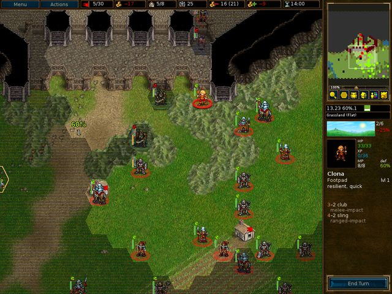

Mục lục
Danh sách Bảng
- 2.1. Điều khiển và phím tắt chung
- 2.2. Phím tắt cho đơn vị và lượt
- 2.3. Phím tắt cho bảng trắng
- 2.4. Phím tắt cho nhiều người chơi
- 2.5. Phím tắt hỗn hợp
- 2.6. Phím tắt hỗn hợp
- 2.7. Điều khiển và phím cho Pandora
- 2.8. Thời điểm trong ngày và lượng thiệt hại
- 2.9. Thưởng kinh nghiệm khi giết hoặc chiến đấu với kẻ thù có các cấp độ khác nhau
- 2.10. Quả cầu
Trận chiến vì Wesnoth là một trò chơi chiến lược dựa trên lượt đi với phong cách thần thoại.
Xây dựng quân đội hùng mạnh, từ từ đào tạo lính mới thành các chiến binh kỳ cựu. Trong các trò chơi về sau, gọi lại các chiến binh bền bỉ nhất và tạo thành đạo quân mà không kẻ nào có thể chống lại! Chọn đơn vị từ một loạt các chuyên gia, và chọn thủ công một lực lượng có sức mạnh đúng đắn để chiến đấu tốt trên những địa hình khác nhau chống lại mọi kiểu chống đối.
Wesnoth có nhiều câu chuyện dân gian khác nhau đang chờ bạn chơi. Bạn có thể chiến đấu với người thú, ma quái và trộm cướp ở biên giới của vương quốc Wesnoth, chiến đấu cùng với rồng trên những đỉnh núi cao chót vót, thần tiên trong những dải màu xanh của khu rừng Aethenwood, người lùn trong các đại sảnh của Knalga, hoặc thậm chí người cá ở vịnh Ngọc Trai. Bạn có thể chiến đấu để giành lại ngai vàng Wesnoth, sử dụng sức mạnh kinh hoàng của mình trên ma quái để thống trị vùng đất của con người, hoặc lãnh đạo bộ lạc người thú vinh quang của mình chiến thắng trước những kẻ dám cướp đoạt đất đai của bạn.
Bạn sẽ có thể chọn trong số trên hai trăm kiểu đơn vị (bộ binh, kỵ binh, cung thủ và pháp sư... đó mới chỉ là bắt đầu) và các hành động chiến đấu, từ mai phục các đơn vị nhỏ đến đụng độ các quân đội lớn. Bạn cũng có thể thách đấu bạn bè - hoặc người lạ - và chiến đấu trong những trận chiến nhiều người chơi hoành tráng.
Trận chiến vì Wesnoth là một phần mềm mã nguồn mở, và một cộng đồng thịnh vượng các tình nguyện viên hợp tác để cải tiến trò chơi. Bạn có thể tạo các đơn vị tùy chỉnh, viết các màn chơi, và kể cả các chiến dịch trọn vẹn theo kịch bản của riêng mình. Nội dung do người dùng bảo trì có từ máy chủ phần bổ sung, và những thứ tốt nhất của nó được tích hợp vào các bản phát hành chính thức của Trận chiến vì Wesnoth.
Phần đã biết của Đại Lục Địa, trên đó có Wesnoth, nói chung được chia thành ba vùng: vùng đất phương Bắc, thường là không có luật, vương quốc Wesnoth cùng xứ theo từng thời kỳ Elensefar, và lãnh địa của các thần tiên tây nam trong khu rừng Aethenwood và xa hơn.
Vương quốc Wesnoth nằm ở trung tâm của vùng đất này. Biên giới của nó là Dòng Sông Lớn ở phía bắc, vùng đồi Dulatus ở phía đông và nam, bìa rừng Aethenwood ở phía tây nam, và Đại Dương Lớn ở phía tây. Elensefar, tỉnh một thời của Wesnoth, giới hạn bởi Dòng Sông Lớn ở phía bắc, một đường xác định lỏng lẻo với Wesnoth ở phía đông, vịnh Ngọc Trai ở phía nam, và đại dương ở phía tây.
Vùng đất phương Bắc là xứ sở hoang vu ở phía bắc của Dòng Sông Lớn. Nhiều nhóm người thú, người lùn, những người man rợ và thần tiên cư trú trong vùng. Ở phía bắc và phía đông là khu rừng Lintanir, ở đó vương quốc lớn của các thần tiên phương bắc giữ những công việc bí ẩn của riêng nó.
Trên vùng đất là những ngôi làng rải rác ở đó bạn có thể điểu trị cho quân lính và thu thập thu nhập cần để hỗ trợ quân đội. Bạn cũng sẽ phải băng qua núi, sông, xuyên qua rừng, đồi, lãnh nguyên, và băng qua đồng cỏ trống trải. Trong mỗi vùng này, các sinh vật khác nhau đã thích nghi để sống ở đó có thể di chuyển dễ dàng hơn và chiến đấu tốt hơn khi chúng ở trong địa hình quen thuộc.
Trong thế giới Wesnoth ở đó con người, thần tiên, người lùn, người thú, người rồng, thằn lằn, người cá, người rắn, và nhiều chủng tộc khác chưa biết đến cư ngụ. Ở những vùng đất đáng nguyền rủa, người chết và ma đi lang thang, quái vật ẩn nấp trong những đống đổ nát và hầm tối. Mỗi loài đều đã thích nghi với các địa hình cụ thể. Con người sống chủ yếu ở những vùng đồng cỏ ôn hòa. Trên đồi, núi và trong hang động dưới lòng đất, người thú và người lùn gần như đang ở nhà. Trong rừng thần tiên chiến ưu thế. Trên đại dương và sông hồ, người cá và người rắn thống trị.
Trong trò chơi, các chủng tộc xếp nhóm thành các liên minh, ví dụ, người thú thường hợp tác với quỷ núi, và thần tiên hoặc người lùn với con người. Một số liên minh khác phản ánh sự phân chia trong xã hội con người, ví dụ những người trung thành với những kẻ giang hồ. Trong hầu hết các chiến dịch, bạn sẽ điều khiển các đơn vị lấy từ một liên minh duy nhất. Nhưng đôi khi các liên minh có thể lập đồng minh với những liên minh khác, vì thế bạn có thể phải đối mặt với nhiều hơn một liên minh trong một màn chơi.
Khi Wesnoth khởi động lần đầu tiên nó hiển thị một ảnh nền ban đầu và một cột các nút gọi là Trình đơn chính. Các nút chỉ hoạt động với chuột. Cho những người nóng vội, chúng tôi khuyên bạn: nhấn nút "Ngôn ngữ" để thiết lập ngôn ngữ của bạn, sau đó nhấn nút "Hướng dẫn" để chạy hướng dẫn, sau đó chơi chiến dịch "Câu chuyện về hai anh em" bằng cách nhấn nút "Chiến dịch" và chọn nó từ danh sách được cung cấp.

- Hướng dẫn
- Hướng dẫn là một trò chơi thực sự, nhưng cơ bản, dạy bạn một số điều cơ bản cần để chơi trò chơi. Thắng hay thua không quan trọng ở đây, mà quan trọng là học những gì cần biết. Nhấn nút Hướng dẫn để chơi. Trong Hướng dẫn, bạn nhập vai hoàng tử Konrad hoặc công chúa Li’sar, học từ pháp sư già Delfador, hãy chú ý nếu không ông ấy có thể biến bạn thành một con sa giông.
- Chiến dịch
- Wesnoth được thiết kế chủ yếu để chơi các chiến dịch. Chiến dịch là một loạt các màn chơi nối tiếp nhau. Nhấn nút này để bắt đầu một chiến dịch mới. Bạn sẽ được cho một danh sách lựa chọn các chiến dịch có trên máy tính (nhiều hơn có thể tải về nếu bạn muốn). Chọn chiến dịch của bạn và nhấn Đồng ý để bắt đầu hoặc Hủy bỏ để thoát. Mỗi chiến dịch có một mức độ khó: dễ, trung bình (bình thường), và khó. Chúng tôi khuyên trung bình vì mức độ này khá thử thách, nhưng không khó. Bạn không thể thay đổi độ khó trong chiến dịch. Trong trường hợp bạn gặp vấn đề nghiêm trọng khi chiến đấu ở mức độ dễ, cẩm nang về Chiến lược cơ bản chắc chắn sẽ giúp bạn. Một khi bạn đã chọn mức độ khó, bạn sẽ bắt đầu với màn chơi đầu tiên của chiến dịch.
- Nhiều người chơi
- Nhấn nút này để chơi một màn chơi chống lại một hoặc nhiều đối thủ. Bạn có thể chơi trò chơi qua Internet hoặc với máy tính, chống lại đối thủ do máy tính hoặc người điều khiển. Khi bạn chọn nút này, một hộp thoại sẽ xuất hiện và cho phép bạn chọn cách bạn muốn chơi màn chơi. Để tìm hiểu thêm, xem màn chơi.
- Tải
- Nhấn nút này để tải một trò chơi đã lưu trước đó. Bạn sẽ được hiển thị một hộp thoại liệt kê các trò chơi đã lưu. Chọn trò chơi và nhấn Đồng ý để tải và tiếp tục, hoặc Hủy bỏ để trở về Trình đơn chính. Nếu bạn chọn một trò chơi phát lại, bạn có thể đánh dấu hộp kiểm Phát lại. Trò chơi được tải lại sẽ làm lại toàn bộ di chuyển từ đầu trong khi bạn theo dõi.
- Phần bổ sung
- Nhấn nút này để vào máy chủ nội dung ở đó chứa rất nhiều nội dung do người dùng bình thường tạo. Trong số các thứ có ở đó là nhiều chiến dịch, thời đại nhiều người chơi (định nghĩa các liên minh cho các trò chơi nhiều người chơi) và bản đồ nhiều người chơi. Với nút "Xóa phần bổ sung" bạn có thể xóa chúng một khi bạn không muốn chúng nữa.
- Chỉnh sửa bản đồ
- Nhấn nút này để bắt đầu chương trình chỉnh sửa bản đồ ở đó bạn có thể tạo các bản đồ tùy chỉnh để nhiều người chơi hoặc để xây dựng chiến dịch của riêng bạn.
- Ngôn ngữ
- Nhấn nút này, chọn ngôn ngữ của bạn, và nhấn Đồng ý để sử dụng nó, hoặc Hủy bỏ để tiếp tục với ngôn ngữ hiện thời. Lần đầu tiên Wesnoth khởi động, nó mặc định là tiếng Anh hoặc ngôn ngữ bản địa hệ thống nếu có thể được xác định, nhưng một khi bạn thay đổi nó, nó sẽ bắt đầu bằng ngôn ngữ đó.
- Tùy thích
- Nhấn vào đây để thay đổi các thiết lập mặc định.
- Đóng góp
- Nhấn nút này để xem danh sách những người đóng góp chính cho Wesnoth. Bạn thường sẽ có thể tiếp cận với họ theo thời gian thực tại irc.freenode.org:6667 trên #wesnoth.
- Thoát
- Nhấn nút này để đóng Wesnoth.
- Trợ giúp
- Nhấn nút này để mở hệ thống trợ giúp tích hợp trong trò chơi. Nó sẽ cung cấp cho bạn thông tin về các đơn vị và tất cả các thứ khác có liên quan đến trò chơi. Hầu hết các thứ này được đề cập trong hướng dẫn sử dụng này.
- Kế tiếp
- Nhấn nút này để đọc mẹo nhỏ kế tiếp từ "Tập sách Wesnoth".
- Trước
- Nhấn nút này để đọc mẹo nhỏ trước từ "Tập sách Wesnoth".
Có hai cách cơ bản để chơi Trận chiến vì Wesnoth:
- Chơi một loạt các màn chơi nối tiếp, gọi là một chiến dịch, chống lại máy tính.
- Chơi một màn chơi đơn chống lại các đối thủ do máy tính hoặc người điều khiển.
Chiến dịch là các loạt trận chiến với một mạch truyện kết nối. Các chiến dịch thông thường có khoảng 10-20 màn chơi. Lợi thế chính của chiến dịch là chúng cho phép bạn phát triển quân đội. Khi bạn hoàn thành một màn chơi, các đơn vị còn lại ở cuối được lưu lại để bạn sử dụng trong màn chơi kế tiếp. Nếu bạn không chọn sử dụng một đơn vị trong một màn chơi nó vẫn được mang sang màn chơi kế tiếp, vì thế bạn không mất đơn vị nếu bạn không sử dụng.
Chiến dịch là dạng chủ yếu Wesnoth nhắm đến để chơi, có lẽ là được ưa thích nhất, và là cách được khuyến cáo cho những người chơi mới để tìm hiểu trò chơi.
Một màn chơi đơn mất khoảng 30 phút đến 2 giờ để hoàn thành. Đây không phải cách nhanh nhất để chơi, nhưng các đơn vị của bạn không được lưu và bạn không thể sử dụng các đơn vị của chiến dịch. Bạn có thể chơi các màn chơi chống lại máy tính hoặc các người chơi khác qua Internet hoặc bên máy tính của bạn. Các màn chơi được truy cập qua nút "Nhiều người chơi" trên trình đơn chính.
Nói chung các trò chơi nhiều người chơi dùng để chơi với những người chơi khác qua Internet (bạn cũng có thể chạy chúng trên mạng cục bộ của bạn nếu có). Tất cả các trò chơi này được điều phối qua máy chủ nhiều người chơi Wesnoth. Các trò chơi nhiều người chơi có thể diễn ra từ 1 giờ đến 10 giờ, tùy thuộc vào số lượng người chơi (và kích thước bản đồ). Thời gian trung bình là giữa 3 đến 7 giờ. Các trò chơi có thể được lưu và tải nhiều lần nếu muốn. Do đó, một số trò chơi hoàn toàn có thể diễn ra 1 hoặc 2 tuần, kể cả khi thời gian chơi chỉ là vài giờ. Bạn không thể mang các đơn vị theo trong trò chơi nhiều người chơi từ màn chơi này sang màn chơi khác, vì thế xây dựng sức mạnh quân đội chỉ có thể thực hiện được bên trong màn chơi.
Có một vài tùy chọn có thể bạn được cung cấp khi nhấn vào nút "Nhiều người chơi":

Đây sẽ là tên của bạn trên máy chủ nhiều người chơi. Nếu bạn có một tài khoản trên diễn đàn Wesnoth, bạn có thể sử dụng cùng tên người dùng và mật khẩu để tham gia máy chủ chính thức. Một hộp mật khẩu sẽ mở ra nếu cần mật khẩu cho tên người dùng hiện thời. Bạn không thể sử dụng một tên đã đăng ký mà không có mật khẩu.
Tùy chọn này kết nối trực tiếp đến máy chủ chính thức. Bạn sẽ kết thúc trong phòng gặp gỡ ở đó bạn có thể tạo các trò chơi như bạn muốn, ở đó nhiều trò chơi cũng đã mở và có thể một số người chơi đang chờ để tham gia một trận đấu mới.
Tùy chọn này mở một hộp thoại cho phép bạn nhập địa chỉ của máy cần tham gia. Trong hộp thoại này cũng có nút "Xem danh sách" hiện một danh sách các máy chủ chính thức có thể được sử dụng để dự phòng nếu máy chủ chính hiện không hoạt động.
Danh sách đầy đủ các máy chủ chính thức và do người dùng thiết lập được liệt kê tại website này: Máy chủ nhiều người chơi.
Bạn cũng có thể kết nối đến các máy chủ của bất kỳ người chơi nào khác với tùy chọn trình đơn này. Do đó nếu bạn có một máy chủ đang chạy trên mạng cục bộ, chỉ cần nhập địa chỉ và cổng (mặc định: 15000). Ví dụ nếu bạn muốn kết nối đến một máy chủ đang chạy trên máy có địa chỉ 192.168.0.10 và cổng mặc định, bạn sẽ nhập chuỗi này vào hộp thoại: 192.168.0.10:15000
Để có thể bắt đầu một trò chơi nhiều người chơi mà không sử dụng máy chủ nhiều người chơi bên ngoài, bạn phải khởi động trình phục vụ, thường được đặt tên là wesnothd. Chương trình này được tự động khởi chạy ngầm khi chọn tùy chọn này. Nó sẽ bị ngừng, khi tất cả các người chơi đã rời máy chủ. Những người chơi khác cần có thể kết nối đến cổng 15000 sử dụng TCP để chơi với bạn trên máy chủ của bạn. Nếu bạn ở sau tường lửa, bạn có lẽ sẽ cần thay đổi các thiết lập tường lửa để cho phép các kết nối đến cổng 15000, và yêu cầu tường lửa chuyển tiếp thông tin đến máy làm chủ trò chơi. Bạn không cần thực hiện thay đổi tường lửa để tham gia các trò chơi có trên một máy chủ công cộng hoặc bởi ai đó khác.
Tùy chọn này tạo một trò chơi chạy ngay trên máy tính của bạn. Bạn có thể sử dụng nó làm trò chơi ghế nóng trong đó mọi ngời chơi trên cùng máy tính bằng cách nhận lượt theo ghế nóng. Các trò chơi ghế nóng sẽ mất cùng khoảng thời gian như các trò chơi qua Internet. Hoặc bạn có thể chỉ cần chơi một màn chơi chống lại đối thủ máy tính thay vì con người. Tùy chọn này cũng có thể được sử dụng làm cách đơn giản để khám phá các tính năng của đơn vị từ các liên minh khác nhau bằng cách chọn liên minh nào bạn muốn chơi và liên minh nào đối thủ của bạn chơi. Tất nhiên, bạn cũng có thể trộn cả hai trong một trò chơi, tức là cùng chơi với một người bạn chống lại một đối thủ máy tính.

Bất kể bạn đang chơi một màn chơi hay một chiến dịch, bố cục cơ bản của màn hình trò chơi đều giống nhau. Phần lớn màn hình là một bản đồ hiện tất cả các hành động diễn ra trong trò chơi. Xung quanh bản đồ là nhiều thành phần khác cung cấp thông tin hữu ích về trò chơi và được mô tả chi tiết hơn bên dưới.

Phía trên màn hình đi từ trái qua phải là các mục sau:
- Nút trình đơn
- Nút Hành động
- Bộ đếm lượt (lượt hiện thời/số lượt tối đa)
- Vàng của bạn
- Số làng (làng của bạn/tổng số làng)
- Tổng số đơn vị của bạn
- Phí bảo trì của bạn
- Thu nhập của bạn
- Thời gian hiện thời hoặc thời gian còn lại (trong các trò chơi nhiều người chơi có định thời gian)

Phía bên phải màn hình đi từ trên xuống dưới là:
- Toàn bản đồ, có tỷ lệ
- Vị trí ô lục giác hiện thời (tọa độ x, tọa độ y), tỷ lệ phòng thủ và di chuyển của đơn vị hiện được chọn trên ô lục giác được đánh dấu
- Kiểu ô lục giác hiện thời
- Chỉ thị thời điểm trong ngày
- Hồ sơ cho đơn vị được chọn cuối cùng
- Nút Kết thúc lượt
Khi bạn bắt đầu một màn chơi hoặc chiến dịch lần đầu tiên bạn sẽ chỉ có một ít đơn vị trên bản đồ. Một trong số này sẽ là người chỉ huy của bạn (được xác định bằng một biểu tượng vương miện vàng nhỏ). Người chỉ huy của bạn thường được đặt trong một lâu đài trên một ô lục giác đặc biệt gọi là một pháo đài. Khi người chỉ huy của bạn ở trên một pháo đài (không chỉ là pháo đài của bạn, mà cả pháo đài của bất kỳ lâu đài kẻ thù nào bạn chiếm) và bạn có đủ vàng, bạn có thể tuyển các đơn vị cho quân đội của mình. Trong các màn chơi sau, bạn có thể gọi lại các đơn vị có kinh nghiệm đã sống sót trong các màn chơi trước. Từ đây, bạn có thể bắt đầu xây dựng quân đội để chinh phục kẻ thù.
Điều đầu tiên bạn có lẽ muốn làm là tuyển đơn vị đầu tiên của bạn. Ấn
Ctrl+r (hoặc nhấn chuột phải lên một ô lục giác lâu đài
còn trống và chọn "Tuyển quân"), bạn sẽ có thể tuyển một đơn vị từ danh sách
tất cả các đơn vị có thể. Mỗi quân được tuyển được đặt trên một ô lục giác
lâu đài còn trống. Khi bạn đã lấp đầy hết lâu đài, bạn không thể tuyển quân
được nữa đến khi các đơn vị di chuyển ra ngoài. Người chỉ huy của đối thủ
cũng được đặt trên pháo đài lâu đài của nó và sẽ bắt đầu tuyển dụng quân
lính, vì thế đừng la cà ngắm cảnh, có một trận chiến cần phải thắng.
Vào cuối mỗi màn chơi thành công, tất cả quân lính còn lại của bạn được lưu tự động. Ở đầu màn chơi kế tiếp, bạn có thể gọi lại chúng theo cách tương tự như tuyển quân. Quân lính được gọi lại thường có nhiều kinh nghiệm hơn lính mới tuyển và thường là lựa chọn tốt hơn.
Tất cả các kiểu trò chơi đều sử dụng binh sĩ, gọi là các đơn vị. Mỗi đơn vị được xác định bởi chủng tộc, cấp độ và phân loại. Mỗi đơn vị đều có điểm mạnh và điểm yếu, dựa trên sức kháng cự của chúng, địa hình hiện thời, và cấp độ. Chi tiết đầy đủ có trong trợ giúp trong trò chơi.
Khi quân lính của bạn giành kinh nghiệm chiến đấu, chúng sẽ học được thêm nhiều kỹ năng và trở nên mạnh hơn. Chúng cũng sẽ chết trong chiến trận, vì thế bạn sẽ cần tuyển quân và gọi lại thêm khi điều đó xảy ra. Nhưng hãy chọn một cách khôn ngoan, vì mỗi quân lính có đều có điểm mạnh và điểm yếu mà một đối thủ xảo trá sẽ dễ dàng lợi dụng.
Chú ý cẩn thận hộp thoại Mục tiêu ở đầu mỗi màn chơi. Thông thường bạn sẽ giành chiến thắng bằng cách giết toàn bộ chỉ huy của kẻ thù, và chỉ bị thua cuộc khi để người chỉ huy của mình bị giết. Nhưng các màn chơi có thể có những mục tiêu chiến thắng khác - đưa người chỉ huy của bạn đến một điểm xác định, giải cứu ai đó, giải quyết một vấn đề, hoặc phòng thủ chống lại một cuộc bao vây đến hết một số lượt nhất định.
Khi bạn thắng một màn chơi, bản đồ sẽ xám lại và nút Kết thúc lượt sẽ thay đổi thành Kết thúc màn. Giờ bạn có thể làm những việc như thay đổi các tùy chọn lưu trò chơi hoặc (nếu bạn đang tham gia một trò chơi nhiều người chơi) tán gẫu với những người chơi khác trước khi ấn nút đó để đi tiếp.
Quân đội của bạn không chiến đấu miễn phí. Bạn mất vàng để tuyển các đơn vị và để bảo trì chúng. Bạn bắt đầu mỗi màn chơi với lượng vàng mang theo từ màn chơi trước (mặc dù mỗi màn chơi đều đảm bảo bạn có ít nhất một lượng vàng tối thiểu để bắt đầu nếu bạn không mang theo đủ từ các màn chơi trước) và có thể tăng nhiều hơn bằng cách thỏa mãn nhanh chóng mục tiêu của màn chơi, và trong một màn chơi, bằng cách kiểm soát các ngôi làng. Mỗi ngôi làng bạn kiểm soát sẽ cho bạn thu nhập hai lượng vàng mỗi lượt. Khi bạn bắt đầu một màn chơi, thường đáng giá khi giành quyền kiểm soát càng nhiều làng càng tốt để đảm bảo bạn có đủ thu nhập để tiến hành chiến tranh. Bạn có thể xem lượng vàng và thu nhập hiện thời của mình ở phía trên màn hình như được mô tả trong phần màn hình trò chơi.
Ở đầu mỗi màn chơi, trạng thái trò chơi của bạn thường được lưu lại. Nếu bạn thua cuộc, bạn có thể tải nó và thử lại. Khi bạn đã thành công, bạn sẽ được hỏi lại để lưu màn chơi kế tiếp và chơi màn đó. Nếu bạn phải ngừng khi đang chơi trong một màn chơi, bạn có thể lưu lượt của mình và tải lại nó về sau. Chỉ cần nhớ, một người chơi Trận chiến vì Wesnoth giỏi không bao giờ cần lưu trong một màn chơi. Tuy nhiên, hầu hết những người mới bắt đầu có xu hướng làm thế khá thường xuyên.
Đây là các phím điều khiển mặc định. Thiết lập phím có thể khác tùy thuộc vào nền tảng được sử dụng. Ví dụ bạn thường sẽ phải sử dụng phím Cmd thay vì phím Ctrl khi bạn sử dụng MacOSX. Bạn có thể thay đổi hầu hết phím tắt theo ý thích sử dụng trình đơn Tùy thích.
Bảng 2.1. Điều khiển và phím tắt chung
| F1 | Trợ giúp Trận chiến vì Wesnoth |
| Phím mũi tên | Cuộn |
| Nhấn chuột trái | Chọn đơn vị, di chuyển đơn vị |
| Nhấn chuột phải | Trình đơn ngữ cảnh, hủy hành động |
| Nhấn chuột giữa | Căn trung tâm ở vị trí con trỏ |
| Esc | Thoát trò chơi, thoát trình đơn, hủy tin nhắn |
| Ctrl+s | Lưu trò chơi |
| Ctrl+o | Tải trò chơi |
| Ctrl+p | Đi đến trình đơn Tùy thích |
| Ctrl+q | Thoát trò chơi |
| Ctrl+f | Bật tắt chế độ toàn màn hình/cửa sổ |
| Ctrl+Alt+m | Bật tắt âm thanh trò chơi |
| + | Phóng to |
| - | Thu nhỏ |
| 0 | Đặt lại độ phóng về mặc định |
| Ctrl+e | Bật tắt hình elip |
| Ctrl+g | Bật tắt lưới |
| Ctrl+a | Bật tắt chế độ trò chơi tăng tốc |
| Giữ Shift | Bật tắt giữa chế độ trò chơi tăng tốc và bình thường khi được ấn (tạm thời!) |
| Ctrl+j | Hiện mục tiêu màn chơi |
| s | Hiện thống kê |
| Alt+s | Hiện bảng trạng thái |
| Alt+u | Hiện danh sách đơn vị |
| l | Di chuyển đến đơn vị chỉ huy |
| Shift+s | Cập nhật màn che ngay |
Bảng 2.2. Phím tắt cho đơn vị và lượt
| Ctrl+r | Tuyển đơn vị |
| Ctrl+Alt+r | Lặp lại lần tuyển quân trước |
| Alt+r | Gọi lại đơn vị |
| Ctrl+n | Đổi tên đơn vị |
| d | Hiện mô tả về đơn vị hiện được chọn |
| t | Tiếp tục di chuyển bị gián đoạn của đơn vị |
| u | Đảo lại di chuyển cuối cùng (chỉ những di chuyển được xác định là có thể đảo lại) |
| r | Làm lại di chuyển |
| n | Quay vòng qua các đơn vị có di chuyển còn bỏ sót |
| Shift+n | Quay vòng qua các đơn vị có di chuyển còn bỏ sót, theo chiều ngược |
| Ctrl+v | Hiện di chuyển của kẻ thù (nơi kẻ thù có thể di chuyển ở lượt kế tiếp) |
| Ctrl+b | Hiện di chuyển tiềm ẩn của kẻ thù, nếu các đơn vị của bạn không ở trên bản đồ |
| 1-7 | Hiển thị đơn vị hiện được chọn có thể di chuyển bao xa trong nhiều lượt đó |
| Dấu cách | Kết thúc lượt đơn vị và quay vòng đến đơn vị kế tiếp có di chuyển còn sót |
| Shift+Dấu cách | Yêu cầu đơn vị hiện được chọn giữ vị trí (kết thúc di chuyển của nó) |
| Ctrl+Dấu cách | Kết thúc lượt của người chơi này |
Bảng 2.3. Phím tắt cho bảng trắng
| p | Bật tắt chế độ lập kế hoạch |
| y | Thực hiện hành động đã lập kế hoạch |
| h | Xóa hành động đã lập kế hoạch |
| Pg Dn | Chuyển hành động xuống trong hàng đợi |
| Pg Up | Chuyển hành động lên trong hàng đợi |
| Ctrl+y | Thực hiện tất cả các hành động |
| i | Giả sử đã chết |
Bảng 2.4. Phím tắt cho nhiều người chơi
| m | Nhắn tin cho một người chơi khác (trong chế độ nhiều người chơi) |
| Ctrl+m | Nhắn tin cho các đồng minh của bạn (trong chế độ nhiều người chơi) |
| Alt+m | Nhắn tin cho mọi người trong trò chơi (trong chế độ nhiều người chơi) |
| Alt+c | Xem nhật ký tán gẫu |
| Ctrl+x | Xóa tin nhắn |
Bảng 2.5. Phím tắt hỗn hợp
| Ctrl+c | Xóa nhãn trên màn hình |
| / | Tìm kiếm (tìm nhãn hoặc đơn vị theo tên) |
| Alt+l | Gắn một nhãn văn bản vào một ô lục giác địa hình |
| Ctrl+l | Đặt nhãn đội |
| : | Chế độ lệnh |
| F5 | Tải lại bộ nhớ đệm |
| Shift+c | Tạo đơn vị (Gỡ lỗi!) |
| f | Chạy công thức của máy tính |
Một số phím trên MacOSX cần nhiều hơn việc thay thế Ctrl bằng Cmd. Sau đây là danh sách các phím đó:
Bảng 2.6. Phím tắt hỗn hợp
| Cmd+w | Thoát trò chơi |
| Cmd+, | Đi đến trình đơn Tùy thích |
| Ctrl+F5 | Tải lại bộ nhớ đệm |
| Option+Dấu cách | Kết thúc lượt của người chơi này |
Một số phím tắt được thay đổi một chút để sử dụng tốt hơn các điều khiển của Pandora. Nếu bạn đang sử dụng Pandora, các phím này khác so với danh sách nói trên:
Bảng 2.7. Điều khiển và phím cho Pandora
| D-Pad | Cuộn |
| Nút A | Tuyển đơn vị |
| Nút B | Đảo lại di chuyển cuối cùng (chỉ những di chuyển được xác định là có thể đảo lại) |
| Nút X | Quay vòng qua các đơn vị có di chuyển còn bỏ sót |
| Nút Y | Gọi lại đơn vị |
| Alt+Nút Y | Chuyển hành động xuống dưới hàng đợi |
| Alt+Nút X | Chuyển hành động lên trên hàng đợi |
Mỗi phe được cho một lượng vàng nào đó để bắt đầu, và nhận 2 lượng vàng mỗi lượt, cộng thêm 2 lượng vàng nữa cho mỗi ngôi làng phe đó kiểm soát. Trong một chiến dịch, lượng vàng ban đầu là lượng vàng tối thiểu được xác định bởi màn chơi, thường thấp hơn khi mức độ khó tăng lên. Ngoài ra bạn thường có một tỷ lệ phần trăm lượng vàng mang theo từ màn chơi cuối cùng được chơi. Tỷ lệ phần trăm chính xác phụ thuộc vào màn chơi và thường được hiển thị như một phần trong mục tiêu màn chơi.

Vàng được sử dụng chủ yếu để xây dựng quân đội bằng cách tuyển các đơn vị mới hoặc gọi lại các đơn vị từ các màn chơi trước trong một chiến dịch. Các đơn vị có thể được tuyển hoặc gọi lại khi người chỉ huy ở trên một pháo đài mà lâu đài của nó có ít nhất một ô lục giác trống.
- Nhấn chuột phải vào một ô lục giác lâu đài trống và chọn Tuyển quân để tuyển các đơn vị từ danh sách đưa ra. Chi phí để tuyển quân phụ thuộc vào đơn vị, nhưng thường giữa 10 đến 20 vàng.
- Nhấn chuột phải vào một ô lục giác lâu đài trống và chọn Gọi lại để gọi lại các đơn vị từ các màn chơi trước. Gọi lại tốn chi phí 20 lượng vàng mỗi đơn vị. Xem gọi lại đơn vị để biết thêm thông tin.
Mỗi đơn vị cũng có một chi phí bảo trì. Chi phí bảo trì thường bằng cấp độ của đơn vị, trừ đơn vị có đặc điểm "trung thành" (xem bên dưới). Các đơn vị không được tuyển từ lúc đầu - tức là người chỉ huy hoặc những người tham gia một cách tình nguyện - thường có đặc điểm Trung thành. Chỉ phải trả phí bảo trí nếu tổng phí bảo trì các đơn vị của một phe lớn hơn số ngôi làng phe đó điều khiển. Phí bảo trì phải trả là hiệu giữa số ngôi làng và chi phí bảo trì.
Do đó, công thức để xác định thu nhập mỗi lượt là
2 + số làng - max(0, phí bảo trì - số làng)
ở đó phí bảo trì băngf tổng cấp độ của tất cả các đơn vị không trung thành của bạn.
Nếu chi phí bảo trì lớn hơn số làng + 2 thì phe bắt đầu mất vàng, nếu nó bằng, không giành được hay mất thu nhập.
Trận chiến vì Wesnoth có hàng trăm kiểu đơn vị được đặc trưng bởi một tập hợp phong phú các chỉ số. Ngoài ra, các đơn vị riêng lẻ có thể có các đặc điểm riêng làm cho chúng hơi khác so với các đơn vị khác có cùng kiểu. Cuối cùng, những nhà thiết kế chiến dịch có thể thêm các đơn vị duy nhất vào chiến dịch của họ để mở rộng thêm các tùy chọn cho người chơi.
Các chỉ số cơ bản cho một đơn vị bao gồm máu, số điểm di chuyển nó có, vũ khí nó có thể sử dụng và lượng thiệt hại các vũ khí gây ra. Ngoài ra, các đơn vị cũng có các đặc điểm khác, chẳng hạn phân loại và các khả năng đặc biệt, được mô tả chi tiết hơn bên dưới.
Mỗi đơn vị có một phân loại: chính thống, trung lập, hỗn độn, hoặc tính ngưỡng. Phân loại tác động đến cách các đơn vị thực hiện ở các thời điểm trong ngày khác nhau. Các đơn vị trung lập không bị ảnh hưởng bởi thời điểm trong ngày. Các đơn vị chính thống gây nhiều thiệt hại hơn vào ban ngày và ít hơn vào ban đêm. Các đơn vị hỗn độn gây nhiều thiệt hại hơn vào ban đêm và ít hơn vào ban ngày. Các đơn vị tính ngưỡng gây ít thiệt hại hơn trong cả ngày lẫn đêm.
Hai giai đoạn "ngày" và "đêm" được phân biệt dưới dạng Buổi sáng, Buổi chiều và Canh một, Canh hai, theo vị trí của mặt trời và mặt trăng trong hình ảnh thời điểm trong ngày.
Bảng sau đây hiển thị tác động của các thời điểm trong ngày khác nhau đến lượng thiệt hại gây ra bởi các đơn vị chính thống, hỗn độn và tính ngưỡng:
Bảng 2.8. Thời điểm trong ngày và lượng thiệt hại
| Lượt | Hình ảnh | Giai đoạn trong ngày | Chính thống | Hỗn độn | Tính ngưỡng |
|---|---|---|---|---|---|
| 1 |

| Bình minh | -- | -- | -- |
| 2 |

| Ngày (buổi sáng) | +25% | −25% | −25% |
| 3 |

| Ngày (buổi chiều) | +25% | −25% | −25% |
| 4 |

| Chạng vạng | -- | -- | -- |
| 5 |

| Đêm (canh một) | −25% | +25% | −25% |
| 6 |

| Đêm (canh hai) | −25% | +25% | −25% |
| Đặc biệt |

| Dưới lòng đất | −25% | +25% | −25% |
Lưu ý rằng một số màn chơi diễn ra dưới lòng đất, ở đó luôn luôn là đêm!
Ví dụ: xem xét một một trận đấu giữa một đơn vị chính thống và một đơn vị
trung lập khi cả hai có thiệt hại cơ bản là 12. Vào lúc bình minh hoặc chạng
vạng, cả hai sẽ gây ra 12 điểm thiệt hại nếu chúng đánh trúng. Trong buổi
sáng hoặc buổi chiều, đơn vị chính thống sẽ gây (12 \*
1.25) hay 15 điểm, trong khi đơn vị hỗn độn sẽ gây (12 \*
0.75) hay 9 điểm. Trong canh một hoặc canh hai, đơn vị chính thống
sẽ gây 9 điểm khi so với 15 của đơn vị hỗn độn.
Nếu một đơn vị trung lập tương đương chiến đấu, nó sẽ luôn gây 12 điểm thiệt hại bất kể giờ giấc.
Các đơn vị có các đặc điểm phản ánh các nét tính chất của chúng. Các đặc điểm được cấp ngẫu nhiên cho các đơn vị khi chúng được tạo. Hầu hết các đơn vị nhận hai đặc điểm.
Các đặc điểm có thể cho hầu hết các đơn vị là như sau:
- Thông minh
- Các đơn vị thông minh cần kinh nghiệm để nâng cấp ít hơn bình thường 20% (quỷ núi không có đặc điểm này). Các đơn vị thông minh rất hữu ích ở đầu một chiến dịch vì chúng có thể nâng cấp lên cấp độ cao nhanh hơn. Về sau trong chiến dịch, đặc điểm thông minh không hữu ích lắm bởi vì nâng cấp sau cấp độ tối đa không phải là một thay đổi có ý nghĩa bằng nâng cấp cấp độ. Nếu bạn có nhiều đơn vị ở cấp độ tối đa, bạn có thể muốn gọi lại các đơn vị có những đặc điểm khác hữu ích hơn.
- Nhanh nhẹn
- Các đơn vị nhanh nhẹn có thêm 1 điểm di chuyển, nhưng ít máu hơn bình thường 5%. Nhanh nhẹn là đặc điểm dễ nhận thấy nhất, đặc biệt ở các đơn vị di chuyển chậm như quỷ núi hay bộ binh hạng nặng. Các đơn vị có đặc điểm nhanh nhẹn thường có tính linh động tăng đáng kể trên địa hình gồ ghề, đó có thể là điều quan trọng cần xem xét khi triển khai lực lượng. Ngoài ra, các đơn vị nhanh nhẹn không dai sức bằng các đơn vị không có đặc điểm này và do đó kém hơn khi trấn giữ những vị trí tranh chấp.
- Bền bỉ
- Các đơn vị bền bỉ có nhiều hơn bình thường 4 máu cộng thêm 1 máu với mỗi cấp độ.Các đơn vị bền bỉ có thể hữu dụng ở mọi giai đoạn của chiến dịch, và đây là đặc điểm hữu dụng cho mọi đơn vị. Bền bỉ thường là đặc điểm hữu ích nhất khi nó xảy ra ở một đơn vị có sự kết hợp của lượng máu thấp, phòng thủ tốt, hoặc sức kháng cự cao. Các đơn vị bền bỉ đặc biệt hữu ích để trấn giữ những vị trí chiến lược trước đối thủ.
- Mạnh mẽ
- Các đơn vị mạnh mẽ gây nhiều hơn 1 điểm thiệt hại cho mỗi đòn đánh trúng khi cận chiến, và có nhiều hơn 1 máu. Mặc dù hữu ích cho bất kỳ đơn vị cận chiến nào, nhưng đặc điểm mạnh mẽ hiệu quả nhất với các đơn vị có số lần đánh cao chẳng hạn như đấu sĩ thần tiên. Các đơn vị mạnh mẽ có thể rất hữu ích khi một chút thiệt hại bổ sung là tất cả những gì cần để biến một đòn gây thiệt hại bình thường thành một đòn đánh kết liễu.
Cũng có một số đặc điểm chỉ được cấp cho một số đơn vị hoặc chỉ cho các đơn vị của một chủng tộc nhất định. Đó là:
- Khéo léo
- Các đơn vị khéo léo gây nhiều hơn 1 điểm thiệt hại cho mỗi đòn đánh trúng khi chiến đấu từ xa. Khéo léo là đặc điểm chỉ có ở thần tiên. Thần tiên nổi tiếng vì vẻ huyền bí, và tài khéo léo với cây cung. Tuy nhiên, một số thần tiên được ban tặng tài năng bẩm sinh trội hơn anh em của họ. Những thần tiên này gây thêm một điểm thiệt hại với mỗi mũi tên.
- Dũng cảm
- Không phải chịu hình phạt giảm lực tấn công trong những thời điểm trong ngày không thuận lợi (Bộ binh hạng nặng, Ma ăn xác, Quỷ núi, Xác chết biết đi)
- Khỏe mạnh
- Lừng danh vì sức sống lâu bền, một số người lùn cứng cáp hơn những người khác và có thể nghỉ ngơi kể cả khi đang di chuyển hoặc chiến đấu. Các đơn vị khỏe mạnh có nhiều hơn bình thường 1 máu cộng thêm 1 máu với mỗi cấp độ và phục hồi 2 máu nghỉ ngơi thông thường sau mỗi lượt.
Cũng có một số đặc điểm không được cấp ngẫu nhiên. Các đặc điểm này có thể được cấp bởi người thiết kế màn chơi hoặc luôn được cấp dựa trên kiểu đơn vị:
- Già
- Các đơn vị già nhất có thể có đặc điểm Già, giảm 8 điểm máu, 1 điểm di chuyển và lượng thiệt hại cận chiến.
- Đần độn
- Các đơn vị có đặc điểm Đần độn cần thêm 20% kinh nghiệm để nâng cấp.
- Sơ cấp
- Các đơn vị sơ cấp không phải là sinh vật do đó miễn nhiễm với độc, bòn rút với bệnh dịch cũng không có tác dụng với chúng. Các đơn vị sơ cấp nói chung có Sơ cấp là đặc điểm duy nhất.
- Hoang dã
- Các đơn vị có đặc điểm hoang dã chỉ nhận tỷ lệ phòng thủ 50% trong làng bất kể địa hình cơ sở của ngôi làng.
- Trung thành
- Các đơn vị trung thành không đòi phí bảo trì. Hầu hết các đơn vị đều đòi một chi phí bảo trì ở cuối mỗi lượt, bằng với cấp độ của chúng. Các đơn vị trung thành không đòi chi phí này. Trong chiến dịch, các đơn vị nhất định có thể chọn gia nhập lực lượng của người chơi với ý muốn riêng. Các đơn vị này được đánh dấu bằng đặc điểm trung thành. Mặc dù chúng có thể đòi tiền để được gọi lại, nhưng chúng không bao giờ đòi chi phí bảo trì. Đặc điểm này có thể khiến chúng trở nên vô giá trong một chiến dịch dài, khi lượng vàng tiếp tế ít. Các đơn vị được tuyển không bao giờ có đặc điểm này, do đó sẽ là không khôn ngoan khi thải hồi các đơn vị trung thành hoặc để chúng chết một cách dại dột.
- Máy móc
- Các đơn vị máy móc không phải là sinh vật do đó miễn nhiễm với độc, bòn rút và bệnh dịch cũng không có tác dụng với chúng. Các đơn vị máy móc nói chung có Máy móc là đặc điểm duy nhất.
- Chậm chạp
- Các đơn vị lớn, vụng về với đặc điểm Chậm chạp giảm 1 điểm di chuyển và nhiều hơn 5% máu.
- Ma quái
- Các đơn vị ma quái miễn nhiễm với độc, bòn rút và bệnh dịch cũng không có tác dụng với chúng. Các đơn vị ma quái nói chung có Ma quái là đặc điểm duy nhất. Bởi vì các đơn vị ma quái là thân xác của người chết, được gọi lên để chiến đấu, nên chất độc không có tác dụng với chúng. Điều này có thể khiến chúng trở nên vô giá khi xử lý những kẻ thù sử dụng chất độc kết hợp với tấn công.
- Yếu ớt
- Các đơn vị có thể có đặc điểm yếu ớt, giảm 1 máu và 1 lượng thiệt hại cận chiến.
Một số đơn vị có các đòn tấn công đặc biệt. Chúng được liệt kê bên dưới:
- Đánh lén
- Khi được sử dụng để tấn công, đòn này gây lượng thiệt hại lớn gấp đôi nếu có một kẻ thù của đối phương ở phía đối diện của đối phương, và đơn vị đó không bị mất khả năng (ví dụ bị hóa đá).
- Điên cuồng
- Khi được sử dụng để tấn công hoặc phòng thủ, đòn này đẩy cuộc giao chiến đến khi một trong hai bên tham chiến bị tiêu diệt, hoặc 30 vòng đấu đã diễn ra.
- Xung kích
- Khi được sử dụng để tấn công, đòn này gây lượng thiệt hại lớn gấp đôi cho đối phương. Nó cũng khiến cho đơn vị này phải chịu lượng thiệt hại lớn gấp đôi từ đòn phản công của đối phương.
- Bòn rút
- Đơn vị này bòn rút sức khỏe từ các đơn vị có sự sống, phục hồi máu cho bản thân một lượng bằng một nửa lượng thiệt hại mà nó gây ra (làm tròn xuống).
- Đánh trước
- Đơn vị này luôn đánh trước với đòn này, kể cả khi đang phòng thủ.
- Phép thuật
- Đòn này luôn có cơ hội đánh trúng 70% bất kể khả năng phòng thủ của đơn vị bị tấn công.
- Thiện xạ
- Khi được sử dụng để tấn công, đòn này luôn có cơ hội đánh trúng ít nhất cũng là 60%.
- Bệnh dịch
- Khi một đơn vị bị giết bởi một đòn tấn công bệnh dịch, đơn vị đó sẽ bị thay thế bằng một xác chết biết đi ở cùng phe với đơn vị có đòn tấn công bệnh dịch. Đòn này không có tác dụng với ma quái hoặc các đơn vị ở trong làng.
- Độc
- Đòn này làm nhiễm độc đối phương. Các đơn vị bị nhiễm độc mất 8 máu mỗi lượt đến khi chúng được giải độc hoặc bị giảm xuống còn 1 máu. Bản thân chất độc không thể giết một đơn vị.
- Chậm chạp
- Đòn tấn công này làm chậm đối phương đến khi nó kết thúc lượt. Đòn tấn công chậm làm giảm một nửa lượng thiệt hại gây ra bởi đòn của đối phương và chi phí di chuyển của đơn vị bị chậm tăng gấp đôi. Một đơn vị bị chậm sẽ có biểu tượng con ốc sên trong thông tin trạng thái khi chọn nó.
- Hóa đá
- Đòn tấn công này hóa đá đối phương, biến nó thành đá. Các đơn vị đã bị hóa đá không thể di chuyển hay tấn công.
- Liên hoàn
- Số lần đánh của đòn tấn công này giảm khi đơn vị bị thương. Số lần đánh tỷ lệ với % máu / máu tối đa đơn vị có. Ví dụ một đơn vị có 3/4 lượng máu tối đa sẽ có 3/4 số lần đánh được phép.
Một số đơn vị có khả năng hoặc tác động trực tiếp đến các đơn vị khác, hoặc tác động đến cách mà đơn vị đó tương tác với các đơn vị khác. Các khả năng này được liệt kê bên dưới:
- Mai phục
- Đơn vị này có thể ẩn nấp trong rừng, và không bị kẻ thù phát hiện. Các đơn vị kẻ thù không thể nhìn thấy đơn vị này khi nó ở trong rừng, trừ khi chúng có đơn vị bên cạnh nó. Bất kỳ đơn vị kẻ thù nào phát hiện ra đơn vị này đều mất ngay lập tức toàn bộ điểm di chuyển còn lại.
- Ẩn nấp
- Đơn vị này có thể ẩn nấp trong làng (trừ những ngôi làng dưới nước), và không bị kẻ thù phát hiện, trừ khi kẻ thù có đơn vị đứng cạnh nó. Các đơn vị kẻ thù không thể nhìn thấy đơn vị này khi nó ở trong làng, trừ khi chúng có đơn vị bên cạnh nó. Bất kỳ đơn vị kẻ thù nào phát hiện ra đơn vị này đều mất ngay lập tức toàn bộ điểm di chuyển còn lại.
- Giải độc
- Một đơn vị có thể cứu chữa một đồng minh khỏi độc tố, mặc dù đồng minh sẽ không nhận được thêm lượng máu phục hồi ở lượt nó được giải độc.
- Bồi dưỡng
- Đơn vị này giành thêm 1 máu vào lượng máu tối đa khi nó giết một đơn vị, trừ những đơn vị miễn nhiễm với bệnh dịch.
- Hồi máu +4
- Cho phép đơn vị hồi máu cho các đơn vị đồng minh đứng bên cạnh ở đầu mỗi lượt. Một đơn vị được điều trị viên này chăm sóc có thể phục hồi lên tới 4 máu mỗi lượt, hoặc ngăn chất độc phát huy hiệu lực ở lượt đó. Một đơn vị bị nhiễm độc không thể được một điều trị viên cứu chữa khỏi chất độc, mà phải tìm kiếm sự chăm sóc của một ngôi làng hoặc một đơn vị có khả năng giải độc.
- Hồi máu +8
- Đơn vị này kết hợp các phương thuốc thảo mộc với phép thuật để điều trị cho các đơn vị trên chiến trường nhanh hơn bình thường. Một đơn vị được điều trị viên này chăm sóc có thể phục hồi lên tới 8 máu mỗi lượt, hoặc ngăn chất độc phát huy hiệu lực ở lượt đó. Một đơn vị bị nhiễm độc không thể được một điều trị viên cứu chữa khỏi chất độc, mà phải tìm kiếm sự chăm sóc của một ngôi làng hoặc một đơn vị có khả năng giải độc.
- Chiếu sáng
- Đơn vị này chiếu sáng vùng xung quanh, làm cho các đơn vị chính thống chiến đấu tốt hơn, và các đơn vị hỗn độn chiến đấu kém hơn. Bất kỳ đơn vị nào đứng cạnh đơn vị này đều chiến đấu như thể đang là chạng vạng khi trời đang là ban đêm, và như thể đang là ban ngày khi chạng vạng.
- Lãnh đạo
- Đơn vị này có thể lãnh đạo các đơn vị cùng phe đứng cạnh nó, làm cho chúng chiến đấu tốt hơn. Các đơn vị cùng phe có cấp độ thấp hơn đứng cạnh sẽ gây nhiều thiệt hại hơn khi chiến đấu. Khi một đơn vị đứng cạnh, có cấp thấp hơn, và ở cùng phe với đơn vị có khả năng lãnh đạo giao chiến, các đòn tấn công của nó gây thiệt hại nhiều hơn 25% nhân với mức chênh lệch cấp độ của chúng.
- Săn đêm
- Đơn vị này trở nên vô hình trong đêm. Các đơn vị kẻ thù không thể nhìn thấy đơn vị này vào ban đêm, trừ khi chúng có đơn vị bên cạnh nó. Bất kỳ đơn vị kẻ thù nào phát hiện ra đơn vị này đều mất ngay lập tức toàn bộ điểm di chuyển còn lại.
- Tái tạo
- Đơn vị này sẽ tự phục hồi 8 máu mỗi lượt. Nếu nó bị nhiễm độc, nó sẽ loại bỏ chất độc thay vì phục hồi.
- Đột nhập
- Đơn vị này rất giỏi trong việc di chuyển nhanh chóng qua kẻ thù, và bỏ qua toàn bộ vùng kiểm soát của kẻ thù.
- Chịu đòn
- Sức kháng cự của đơn vị này tăng gấp đôi, lên tới tối đa 50%, khi phòng thủ. Sức kháng cự âm không bị ảnh hưởng.
- Lặn
- Đơn vị này có thể ẩn nấp trong nước sâu, và không bị kẻ thù phát hiện. Các đơn vị kẻ thù không thể nhìn thấy đơn vị này khi nó ở trong nước sâu, trừ khi chúng có đơn vị bên cạnh nó. Bất kỳ đơn vị kẻ thù nào phát hiện ra đơn vị này đều mất ngay lập tức toàn bộ điểm di chuyển còn lại.
- Dịch chuyển tức thời
- Đơn vị này có thể dịch chuyển tức thời giữa hai ngôi làng trống bất kỳ mà phe nó sở hữu, sử dụng một điểm di chuyển.
Các đơn vị được thưởng kinh nghiệm khi chiến đấu. Sau khi giành đủ kinh nghiệm, chúng sẽ nâng cấp và trở nên mạnh mẽ hơn. Lượng kinh nghiệm giành được phụ thuộc vào cấp độ của đơn vị kẻ thù và kết cục của trận đấu: nếu một đơn vị giết được đối thủ, nó nhận 8 điểm kinh nghiệm với mỗi cấp độ của kẻ thù (4 nếu kẻ thù có cấp độ 0), trong khi các đơn vị sống sót sau trận đấu mà không giết được đối thủ được thưởng 1 điểm kinh nghiệm với mỗi cấp độ của kẻ thù. Nói cách khác:
Bảng 2.9. Thưởng kinh nghiệm khi giết hoặc chiến đấu với kẻ thù có các cấp độ khác nhau
| cấp độ kẻ thù | thưởng khi giết | thưởng khi chiến đấu |
|---|---|---|
| 0 | 4 | 0 |
| 1 | 8 | 1 |
| 2 | 16 | 2 |
| 3 | 24 | 3 |
| 4 | 32 | 4 |
| 5 | 40 | 5 |
| 6 | 48 | 6 |
Sau khi hoàn thành một màn chơi, tất cả các đơn vị sống sót sẽ có thể được gọi lại ở màn chơi kế tiếp. Bạn không thể di chuyển hoặc tấn công bằng một đơn vị ở lượt bạn tuyển quân hoặc gọi lại đơn vị đó. Một đơn vị được gọi lại vẫn giữ cấp độ, điểm kinh nghiệm, (đôi khi) bất kỳ thứ phép thuật nào đã lấy, và sẽ có đầy đủ máu.
Nhấn vào một đơn vị xác định tất cả những nơi nó có thể di chuyển đến ở lượt
hiện thời bằng cách làm tối các ô lục giác không thể tới được (ấn các phím
số 2-7 sẽ xác định các ô lục giác bổ sung có thể tiếp cận với số lượt đó
theo cách tương tự). Khi ở trong chế độ này, di chuyển con trỏ trên một ô
lục giác sẽ xác định đường đi đơn vị của bạn sẽ theo để hướng đến ô lục giác
đó cũng như thông tin thêm về tỷ lệ phòng thủ của đơn vị trên ô lục giác đó,
và nếu mất nhiều hơn một lượt, số lượt cần để đơn vị đến. Nếu bạn không muốn
di chuyển đơn vị, có thể hủy chế độ này bằng cách chọn một đơn vị khác (bằng
cách nhấn vào đơn vị mới hoặc sử dụng các phím n hay
N) hoặc bằng cách nhấn chuột phải (Cmd-nhấn trên máy Mac)
vào bất cứ đâu trên bản đồ. Quả cầu phía trên
thanh năng lượng của một đơn vị cung cấp một cách nhanh để xem các đơn vị
của bạn đã di chuyển hay còn còn có thể di chuyển tiếp ở lượt này.
Nếu bạn quyết định di chuyển đơn vị được chọn, nhấn vào ô bạn muốn di chuyển đến và đơn vị của bạn sẽ di chuyển đến không gian đó. Nếu bạn chọn một đích nằm ngoài tầm với ở lượt hiện thời, đơn vị sẽ di chuyển xa hết mức có thể ở lượt hiện thời và vào chế độ đi đến. Trong chế độ đi đến đơn vị của bạn sẽ tiếp tục di chuyển đến đích ở các lượt tiếp theo. Bạn có thể dễ dàng đảo lại các di chuyển đi đến ở đầu lượt kế tiếp. Bạn cũng có thể thay đổi đích của một đơn vị bằng cách chọn đơn vị đó và chọn một đích mới hoặc nhấn lại đơn vị để hủy bỏ chế độ đi đến.
Di chuyển vào một ngôi làng hiện trung lập hoặc của kẻ thù sẽ chiếm quyền sở hữu của nó và kết thúc di chuyển cho đơn vị đó.
Hầu hết các đơn vị gây ra một vùng kiểm soát tác động đến các ô lục giác đơn vị của bạn có thể tiếp cận và đường đi đơn vị của bạn theo. Các hạn chế này được phản ánh tự động trong cả đường đi được hiển thị cho đơn vị của bạn lẫn các ô lục giác nó có thể di chuyển đến ở lượt hiện thời.
Vùng kiểm soát của một đơn vị mở rộng đến sáu ô lục giác ngay cạnh đơn vị, và các đơn vị di chuyển vào một vùng kiểm soát của kẻ thù bị bắt buộc phải dừng. Các đơn vị có khả năng đột nhập bỏ qua các vùng kiểm soát của kẻ thù và có thể di chuyển tự do qua chúng mà không bị buộc phải dừng. Các đơn vị cấp độ 0 được xem là quá yếu để tạo ra một vùng kiểm soát và tất cả các đơn vị đều có thể di chuyển dễ dàng qua các ô lục giác xung quanh một đơn vị cấp độ 0 của kẻ thù.
Phía trên thanh năng lượng hiện bên cạnh mỗi đơn vị của bạn là một quả cầu. Quả cầu này có màu:
Bảng 2.10. Quả cầu
| Quả cầu | Hình ảnh | Mô tả |
|---|---|---|
| Xanh lục |

| Nếu bạn điều khiển đơn vị và nó chưa di chuyển ở lượt này |
| Vàng |

| Nếu bạn điều khiển đơn vị và nó đã di chuyển ở lượt này, nhưng vẫn có thể di chuyển tiếp hoặc tấn công |
| Đỏ |

| Nếu bạn điều khiển đơn vị, nhưng nó không thể di chuyển hoặc tấn công được nữa, hoặc người dùng đã kết thúc lượt của đơn vị |
| Xanh lam |

| Nếu đơn vị là một đồng minh bạn không điều khiển |
| - |

| Enemy units have no orb on the top of their energy bar |
Dưới mỗi đơn vị thường sẽ có một hình elip hoặc chân đế màu. Màu xác định đội của nó, trong một chiến dịch, màu người chơi là đỏ. Màu của đội cũng sẽ hiển thị trên các phần quần áo, hoặc có thể trên phù hiệu khiên của đơn vị.
Thường hình elip sẽ là một đĩa đặc. Trên các đơn vị cấp độ 0, bạn sẽ nhìn thấy một hình elip có các đường đứt nét. Điều này chỉ thị rằng đơn vị không có vùng kiểm soát.
Một số chiến dịch sử dụng một chân đế hình sao để chỉ thị người chỉ huy và các anh hùng (các đơn vị đặc biệt theo cách này cách khác và ví dụ, không được phép chết trong màn chơi), một số chiến dịch khác sử dụng một biểu tượng vương miện bạc phía trên thanh năng lượng để đánh dấu các anh hùng. Nhưng một số chiến dịch không có biểu tượng chỉ thị anh hùng nào. Biểu tượng chỉ thị (nếu có) được sử dụng là một lựa chọn phong cách do những người thiết kế chiến dịch đặt ra.
Nếu bạn di chuyển đến bên cạnh một đơn vị kẻ thù, bạn có thể tấn công nó. Nhấn vào đơn vị của bạn mà đang đứng cạnh đơn vị của kẻ thù, và nhấn vào kẻ thù bạn muốn tấn công - thao tác này sẽ mở một cửa sổ cho bạn thêm tùy chọn cho trận đấu. Mọi đơn vị đều có một hoặc nhiều vũ khí. Một số vũ khí, chẳng hạn kiếm, là các vũ khí cận chiến, và một số vũ khí, chẳng hạn cung, là các vũ khí từ xa.
Nếu bạn tấn công bằng một vũ khí cận chiến, kẻ thù bạn tấn công sẽ có thể đánh lại bạn bằng một vũ khí cận chiến. Nếu bạn tấn công bằng một vũ khí từ xa, kẻ thù bạn tấn công sẽ có thể đánh lại bạn bằng một vũ khí từ xa. Nếu kẻ thù không có một vũ khí có cùng kiểu với vũ khí bạn dùng để tấn công, chúng sẽ không thể đánh lại và không gây bất kỳ thiệt hại nào cho bạn trong trận đấu đó.
Different types of attacks do different amounts of damage, and a certain number of strikes may be made with each weapon. For instance, an Elvish Fighter does 5 points of damage with its sword every time it hits, and can strike 4 blows with the sword in one exchange. This is written as 5×4, meaning 5 damage per hit, and 4 strikes.
Mọi đơn vị đều có một nguy cơ bị đánh trúng phụ thuộc vào địa hình nó đang đứng. Ví dụ, các đơn vị trong lâu đài và làng có nguy cơ bị đánh trúng thấp hơn, và thần tiên trong rừng có nguy cơ bị đánh trúng thấp. Để xem tỷ lệ phòng thủ (tức là cơ hội không bị đánh trúng) của đơn vị, nhấn vào đơn vị, sau đó di chuột trên địa hình bạn quan tâm, và tỷ lệ phòng thủ sẽ được hiển thị như một giá trị phần trăm trong khung trạng thái, cũng như được hiển thị trên ô lục giác địa hình.
Bạn có thể nhận được thêm thông tin bổ sung, bao gồm cơ hội mà người tấn công và người phòng thủ sẽ bị giết, bằng cách nhấn nút "Tính toán thiệt hại" trong cửa sổ trận đấu.
- Chém: Các vũ khí có cạnh để cắt, dùng để chặt các mẩu thịt từ kẻ thù. Ví dụ: dao găm, đao, kiếm lưỡi cong, móng vuốt người rồng.
- Đâm: Các vũ khí có điểm nhọn và hoặc một tay cầm dài hoặc một vật phóng ra, dùng để xuyên thủng cơ thể kẻ thù và gây thiệt hại cho các cơ quan bên trong. Ví dụ: thương, mác, mũi tên.
- Va đập: Các vũ khí không có đầu nhọn hay cạnh sắc, nhưng đủ nặng để đập vỡ xương cốt kẻ thù. Ví dụ: chùy, gậy, nắm đấm quỷ núi.
- Lạnh: Các vũ khí dựa trên hơi lạnh hoặc đạn băng. Ví dụ: sóng lạnh của một tín đồ bóng tối.
- Lửa: Các vũ khí sử dụng lửa để nướng kẻ thù như một con gà. Ví dụ: hơi thở lửa của một người rồng.
- Bí kíp: Một đòn tấn công xua đuổi phép thuật hồi sinh xác chết, bóng ma, các sinh vật và linh hồn ma quái khác. Ví dụ: đòn tấn công phép thuật của một pháp sư trắng.
Mỗi đơn vị nhiều hay ít đều dễ bị tổn thương với các kiểu tấn công khác nhau. 6 chỉ số trong mô tả đơn vị hiển thị điểm mạnh và điểm yếu của đơn vị trước 6 kiểu tấn công. Một chỉ số sức kháng cự dương chỉ thị rằng đơn vị sẽ chịu ít thiệt hại hơn từ kiểu tấn công. Một chỉ số sức kháng cự âm chỉ thị rằng đơn vị đặc biệt dễ bị tổn thương trước kiểu tấn công này.
Ví dụ: Lớp vảy của người rồng bảo vệ chúng trước hầu hết các kiểu tấn công ngoại trừ vũ khí đâm và vũ khí lạnh. Các đơn vị kỵ binh của con người nói chung được bảo vệ tốt trừ các đòn tấn công đâm, đó là điểm yếu của chúng. Ma quái có sức kháng cự rất cao trước vũ khí chém và đâm nhưng rất dễ bị tổn thương trước các đòn tấn công va đập và bí kíp.
Sử dụng kiểu tấn công tốt nhất chống lại các đơn vị kẻ thù về thực chất sẽ tăng cơ hội của bạn để giết chúng.
Một đơn vị có thể được điều trị tối đa 8 máu mỗi lượt. Một đơn vị không di chuyển hoặc chiến đấu trong một lượt được nghỉ ngơi và sẽ phục hồi 2 máu. Máu phục hồi nhờ nghỉ ngơi được thêm vào máu phục hồi nhờ điều trị, do đó một đơn vị có thể phục hồi lên tới tổng cộng 10 máu mỗi lượt.
Có hai cách cơ bản để một đơn vị được phục hồi máu:
- Chờ trong một ngôi làng. Đơn vị sẽ phục hồi 8 máu mỗi lượt.
- Đứng bên cạnh các đơn vị có khả năng hồi máu. Số lượng máu phục hồi được chỉ định trong mô tả khả năng của đơn vị. Đó là hồi máu +4 hoặc hồi máu +8.
Quỷ núi và thần rừng có khả năng tự phục hồi bẩm sinh nhờ tái tạo. Chúng sẽ phục hồi 8 máu mỗi lượt nếu chúng bị thương. Chú ý rằng bởi vì tất cả các đơn vị chỉ có thể phục hồi tối đa 8 máu mỗi lượt, quỷ núi và thần rừng không nhận được lợi ích thêm từ việc ở trong một ngôi làng hay đứng bên cạnh một đơn vị hồi máu.
Một số đòn tấn công có thể gây thiệt hại độc trên đơn vị của bạn. Khi điều này xảy ra, đơn vị bị nhiễm độc sẽ nhận lượng thiệt hại 8 máu mỗi lần đến khi nó được giải độc. Chất độc có thể được giải bằng cách chờ trong một ngôi làng hoặc đừng bên cạnh một đơn vị có khả năng giải độc. Các đơn vị có khả năng hồi máu chỉ có thể ngăn chất độc không gây thiệt hại ở lượt đó, chứ không giải độc. Khi chất độc được giải, đơn vị không tăng hay mất máu ở lượt đó do hồi máu/nhiễm độc. Một đơn vị thường không thể được hồi máu đến khi nó được giải độc. Nghỉ ngơi vẫn được cho phép, mặc dù về căn bản nó sẽ không làm giảm tác dụng của chất độc.
Một số gợi ý khác về hồi máu:
- Một đơn vị có thể mất vài lượt để phục hồi hoàn toàn.
- Các điều trị viên (pháp sư thần tiên, đạo sĩ thần tiên, tiên nữ cánh chuồn, pháp sư trắng, pháp sư ánh sáng, hiệp sĩ thần thánh) hồi máu tất cả các đơn vị bị thương xung quanh chúng, do đó bạn có thể giữ các đơn vị này gần trận chiến mà không làm mất chúng.
- Các điều trị viên không hồi máu các đơn vị kẻ thù.
- Các điều trị viên không thể hồi máu cho chính mình, nhưng xem điểm kế tiếp.
- Sử dụng các điều trị viên theo cặp, để họ có thể phục hồi cho nhau nếu cần thiết.
- Nhiều điều trị viên từ các phe đồng minh khác nhau có thể hồi máu cho cùng đơn vị và tăng tốc độ hồi máu.
- Quỷ núi và thần rừng không thể tái tạo các đơn vị khác.
- Quỷ núi và thần rừng tự giải độc như một ngôi làng làm.
Những nguyên tắc và mẹo chiến đấu cơ bản sau đây nhằm giúp bạn bắt đầu sự nghiệp của một cựu binh chiến đấu người Wesnoth. Những ví dụ cụ thể nhỏ hơi gắn với chiến dịch "Người thừa kế ngai vàng".
Đừng để các đơn vị bị thương đến một cái chết chắc chắn. Khi một đơn vị mất nhiều hơn nửa máu của nó, bạn nên xem xét một cách nghiêm túc việc rút nó về nơi an toàn và hoặc là để nó đứng trong một ngôi làng để hồi máu hoặc chăm sóc nó bằng một điều trị viên (như Pháp sư thần tiên hoặc Pháp sư trắng). Các điều trị viên rất hữu ích!
Điều này là vì những lý do thực tế: một đơn vị bị thương nặng không thể trấn giữ hoặc giết kẻ thù. Khi tấn công hoặc phản công, nó nhiều khả năng bỏ mạng. Ngoài ra, bằng cách gửi nó đến cái chết chắc chắn, điểm kinh nghiệm (KN) nó đã thu thập được bị mất. Tuyển dụng một đơn vị thay thế có thể là không thể bởi vì người chỉ huy của bạn không ở trên pháo đài hoặc quỹ tiền của bạn đang xuống thấp. Kể cả nếu bạn có thể tuyển một người thay thế, nó thường cách xa mặt trận. Do đó đừng lãng phí các đơn vị của bạn.
Bạn bảo vệ các đơn vị bị thương bằng cách nào? Chúng được bảo vệ tốt nhất bằng cách nằm ngoài tầm với của kẻ địch. Không có kẻ thù nào có thể tấn công chúng nếu kẻ thù thậm chí còn không thể đến gần chúng. Phần tiếp theo nói về vùng kiểm soát (VKS) chỉ cho bạn cách hạn chế di chuyển của kẻ thù.
Trong trình đơn Hành động, bạn có thể chọn "Hiện di chuyển của kẻ thù" để tô sáng tất cả các ô lục giác mà đối thủ của bạn có thể thực sự di chuyển tới. Điều này tính cả vùng kiểm soát của bạn. Do đó bạn có thể đảm bảo đơn vị gần chết của bạn, đang ở đằng sau, quả thực không thể bị tấn công vì kẻ thù không thể di chuyển đến gần nó.
Khi quân đội gặp gỡ, bạn có thể muốn cố gắng là người đầu tiên tấn công. Do đó cố gắng kết thúc lượt nằm ngoài phạm vi đánh của đơn vị kẻ thù. Hắn không thể tấn công mà nhiều khả năng sẽ vào gần phạm vi đánh của bạn.
Mọi đơn vị có cấp độ 1 trở lên đều có một vùng kiểm soát (VKS) bao phủ toàn bộ 6 ô lục giác xung quanh. Điều này có nghĩa là khi một kẻ thù di chuyển vào một trong sáu ô lục giác, nó bị bắt buộc phải dừng và giai đoạn di chuyển của nó kết thúc (chỉ những kẻ thù với khả năng hiếm đột nhập mới bỏ qua vùng kiểm soát này).
Do VKS, một kẻ thù không thể lẻn giữa hai đơn vị xếp theo đường bắc-nam hoặc chéo và có đúng 1 hoặc 2 ô lục giác giữa chúng. Bằng cách kết hợp các cặp này thành một bức tường dài hoặc sử dụng chúng theo các hướng khác, bạn có thể ngăn kẻ thù tiếp cận một đơn vị bị thương đằng sau. Hắn phải đánh bại các đơn vị đang giữ VKS trước. Nếu kẻ thù chỉ vừa đủ để tiếp cận nó, kể cả một đơn vị duy nhất cũng có thể che chắn một vùng nhỏ đằng sau.
Bằng cách xếp hàng nhiều đơn vị liên tiếp cạnh nhau hoặc với nhiều nhất 1 ô lục giác giữa chúng, bạn có thể tạo nên một hàng phòng thủ vững mạnh. Chú ý rằng, vì Wesnoth sử dụng các ô lục giác, một "hàng" từ đông sang tây không phải là một đường thẳng mà là một đường hình chữ chi. Đường bắc nam và chéo là các đường thẳng "thực sự".
Đến từ một phía, kẻ thù chỉ có thể tấn công bất kỳ đơn vị nào của bạn trong hàng bằng 2 đơn vị của mình. Theo kinh nghiệm, một đơn vị khỏe mạnh không có điểm yếu cụ thể nào có thể chịu được đòn tấn công từ hai đơn vị thông thường của kẻ thù có cùng cấp độ hoặc thấp hơn mà không bị giết.
Tiếc là, hàng của bạn phải bẻ cong để tạo một hình nêm hoặc để khớp với địa hình. Ở điểm góc này, 3 đơn vị kẻ thù có thể tấn công. Điều này cũng xảy ra ở cuối hàng nếu hàng quá ngắn. Sử dụng các đơn vị có nhiều máu trên địa hình đúng hoặc có sức kháng cự đúng để trấn giữ điểm yếu này. Đây là nơi dễ bị giết nhất, do đó sử dụng các đơn vị không có hoặc có ít điểm kinh nghiệm (KN) cho mục đích này.
Xếp hàng quân lính của bạn cũng ngăn ngừa kẻ thù khỏi bao vây ai trong số chúng. Vì lý do VKS, một đơn vị với một kẻ thù đằng sau nó và một đằng trước nó bị bẫy.
Khi một đơn vị ở mặt trận bị thương nặng, bạn có thể di chuyển nó đến nơi an toàn sau hàng phòng thủ của bạn. Để giữ hàng, bạn chắc chắn sẽ phải thay thế nó bằng một quân dự bị, do đó giữ một vài đơn vị đằng sau mặt trận. Nếu bạn có điều trị viên, các đơn vị bị thiệt hại ở hàng thứ hai sẽ phục hồi nhanh chóng.
Chú ý rằng các đơn vị của bạn có thể đi qua các ô lục giác chứa lính của riêng bạn.
Cố gắng định vị quân lính của bạn để chúng tấn công từ một ô lục giác có tỷ lệ phòng thủ cao chống lại một kẻ thù ở ô lục giác có tỷ lệ phòng thủ địa hình thấp. Theo cách đó, các đòn trả đũa của kẻ thù sẽ ít có khả năng gây thiệt hại.
Ví dụ, bạn có thể định vị thần tiên ở ngay bìa rừng để bọn người thú tấn công phải đứng trên đồng cỏ trong khi các thần tiên của bạn hưởng tỷ lệ phòng thủ cao của rừng.
Tiến quân và tấn công chắc chắn là phần thú vị nhất trên đường đến chiến thắng của bạn. Giết hoặc làm yếu kẻ thù trên đường và di chuyển phòng tuyến về phía trước. Điều này có thể khá phiền phức vì kẻ thù được tấn công ở lượt của mình.
Thường, bạn sẽ tập trung một vài đơn vị vào một đơn vị kẻ thù để kết liễu nó, nhưng những đơn vị này đang tạo nên phòng tuyến của bạn mà giờ đã bị phá hỏng một phần. Điều này có thể không có vấn đề gì bởi vì bạn nằm ngoài tầm với của đơn vị kẻ thù kế tiếp. Nhưng cũng có thể có vấn đề bởi vì bạn mới chỉ làm yếu được một kẻ thù rất mạnh và ở lượt sau, nó sẽ đánh trả. Có thể là một kỵ sĩ giáng một đòn tấn công kết liễu.
Đánh trước là một lợi thế bởi vì nó cho phép bạn chọn đơn vị nào sẽ đối mặt. Lợi dụng điểm yếu của kẻ thù: ví dụ nhắm những đòn tấn công từ xa vào kẻ thù không có vũ khí từ xa. Lợi dụng điểm yếu như tính dễ bị tổn thương của kỵ sĩ với đâm. Nhưng nhớ rằng chúng cũng được đánh lại ở lượt của mình, do đó bạn cũng có điểm yếu mà kẻ thù có thể lợi dụng.
Ví dụ, các kỵ sĩ có thể giữ phòng tuyến trước bộ binh người thú và quỷ núi bé con rất tốt vì chúng có một số sức kháng cự trước chém và va đập. Nhưng kỵ sĩ của bạn có thể nhanh chóng gục ngã trước người thú bắn cung và lính giáo yêu tinh.
Thường đáng giá nếu bạn có thể giết hẳn (hoặc gần giết) kẻ thù đối mặt. Nếu bạn không chắc chắn về khả năng kết liễu kẻ thù trong một lượt, hoặc là đảm bảo đơn vị của bạn có thể chịu được đòn đánh trả hoặc quyết định rằng bạn sẵn sàng mất đơn vị đó. Để chống cự lại đòn của kẻ thù ở lượt kế tiếp, thường là khôn ngoan khi tấn công sử dụng phạm vi mà cho phép kẻ thù gây thiệt hại ít nhất cho bạn, hơn là chọn thiệt hại dự kiến lớn nhất cho kẻ thù.
In particular, use your ranged weapons if the enemy has no ranged attack. Using it will often reduce the damage which your units take until the enemy dies.
Nhớ rằng các đơn vị chính thống như con người chiến đấu tốt hơn vào ban ngày, các đơn vị hỗn độn như người thú hoặc ma quái chiến đấu tốt hơn vào ban đêm, và các đơn vị tính ngưỡng chiến đấu tốt nhất vào lúc chạng vạng. Theo lý tưởng bạn muốn gặp lần đầu kẻ thù khi bạn là mạnh và/hoặc hắn là yếu. Khi kẻ thù có thời điểm mạnh, thường đáng giá khi củng cố phòng tuyến của bạn và giữ một vị trí phòng thủ thuận lợi. Khi thời điểm yếu của nó sắp đến, bước tiến của bạn sẽ tràn về phía trước.
Ví dụ, thần tiên có thể giữ một khu rừng trong một cuộc công kích của người thú vào ban đêm và tiến lên khi mặt trời mọc. Bạn thậm chí còn có thể nhận thấy máy tính chủ động rút lui người thú vào ban ngày.
Theo dòng chiến dịch, quan trọng bạn phải xây dựng được một lực lượng dày dạn. Các màn chơi về sau sẽ giả định bạn có các đơn vị cấp độ 2 và 3 để gọi lại.
Các đơn vị của bạn giành hầu hết điểm kinh nghiệm (KN) nhờ giết một đơn vị kẻ thù (8KN với mỗi cấp độ của đơn vị bị giết). Do đó, thường có ý nghĩa khi để các đơn vị cấp cao làm yếu một kẻ thù, nhưng nhường đòn kết liễu cho một đơn vị cần kinh nghiệm hơn. Cụ thể, các điều trị viên thường yếu khi chiến đấu và thường cần phỗng tay trên các đòn kết liễu theo cách này để nâng cấp.
Ban đầu (khi bạn có thể không có đơn vị cấp độ cao nào), cố gắng cho một lượng nhỏ các đơn vị của bạn đánh đòn kết liễu. Điều này sẽ giúp chúng mau chóng trở thành các đơn vị cấp độ 2, và chúng sau đó có thể hướng dẫn những người khác.
Đừng sao lãng việc kiếm kinh nghiệm cho người chỉ huy của bạn. Bạn cần giữ anh ta an toàn, nhưng nếu bạn nâng niu quá mức, anh ta sẽ quá yếu để sống sót trong những màn chơi tương lai.
Nhớ rằng, ý tưởng của một trò chơi là để cho vui! Sau đây là một số lời khuyên từ đội phát triển về cách chơi vui vẻ nhất có thể:
- Xem xét chơi chiến dịch ở mức độ khó "Trung bình", đặc biệt nếu bạn có ít kinh nghiệm với các trò chơi chiến lược. Chúng tôi cảm thấy bạn sẽ nhận thấy nó đáng chơi hơn nhiều.
- Đừng đổ mồ hôi quá nhiều khi bạn mất một vài đơn vị. Chiến dịch được thiết kế để làm cho người chơi mất một vài đơn vị dọc đường.
- Đừng lạm dụng lưu trò chơi. Cách đây lâu, Wesnoth chỉ cho phép lưu trò chơi vào cuối màn chơi. Lưu giữa màn chơi được thêm vào để thuận tiện khi sử dụng nếu bạn phải tiếp tục trò chơi vào một ngày khác, hoặc để bảo vệ tránh đổ vỡ. Chúng tôi không khuyến cáo tải đi tải lại các trò chơi được lưu giữa màn bởi vì pháp sư trắng của bạn liên tục bị giết. Thay vào đó, hãy học cách bảo vệ pháp sư trắng, và cân nhắc các nguy cơ! Đó là một phần của chiến lược.
- Nếu bạn muốn tải lại một trò chơi đã lưu, chúng tôi khuyến cáo trở lại đầu màn chơi, để bạn có thể chọn một chiến lược mới phù hợp, thay vì chỉ đơn giản tìm một số ngẫu nhiên thiên vị bạn.
- Nhưng nhớ rằng, mục đích là vui vẻ! Bạn có thể có sở thích khác với các nhà phát triển, vì thế làm những gì mà bạn thích nhất! Nếu bạn thích tải trò chơi đã lưu mỗi lần bạn mắc lỗi, tìm một trò chơi hoàn hảo ở đó bạn chẳng bao giờ mất một đơn vị, vâng, hãy cứ tiếp tục!
- Đầu tiên, đọc mục tiêu màn chơi. Đôi khi bạn không phải giết các chỉ huy của kẻ thù, mà chỉ cần sống sót sau một số lượt nhất định, hoặc nhặt một đối tượng cụ thể.
- Quan sát bản đồ: địa hình, vị trí của người chỉ huy của bạn và những người chỉ huy khác.
- Sau đó, bắt đầu tuyển quân. Các đơn vị rẻ hữu ích để thí mạng trước đợt tấn công đầu tiên của kẻ thù, các đơn vị cao cấp sau đó có thể được mang ra để hỗ trợ. Các đơn vị nhanh có thể được sử dụng làm trinh sát, để khám phá bản đồ và để nhanh chóng chinh phục các ngôi làng.
- Thử chiếm và kiểm soát càng nhiều làng càng tốt để giữ thu nhập.
- Giữ các đơn vị theo đội để kẻ thù không thể tấn công từ nhiều phía, và để bạn có thể áp đảo mỗi đơn vị kẻ thù. Đặt các đơn vị của bạn theo hàng để kẻ thù không thể tấn công bất kỳ kẻ thù nào của bạn từ nhiều hơn hai phía.
- Các đơn vị khác nhau có điểm mạnh điểm yếu khác nhau tùy thuộc vào địa hình và kẻ chúng đang tấn công, nhấn chuột phải lên đơn vị và chọn "Mô tả đơn vị" để biết thêm.
- Bạn có thể sử dụng các đơn vị cấp thấp làm bia đỡ đạn, để làm chậm kẻ thù. Ví dụ bạn có thể sử dụng chúng để ngăn chặn kẻ thù tiếp cận các đơn vị quan trọng của bạn.
- Bạn có thể gây thiệt hại cho kẻ thù bằng các đơn vị cao cấp và sau đó kết liễu chúng bằng các đơn vị cấp thấp hơn - để cho chúng thêm kinh nghiệm (và cuối cùng giúp chúng nâng cấp lên cấp độ tiếp theo)
- Khi bạn có một pháp sư trắng (nâng cấp từ pháp sư) hoặc đạo sĩ thần tiên (nâng cấp từ pháp sư thần tiên), đặt nó ở giữa một vòng tròn các đơn vị để điều trị cho chúng khi chúng di chuyển khắp bản đồ (các pháp sư thần tiên cũng có thể làm điều này, nhưng không tốt bằng).
- Mất đơn vị là bình thường, kể cả các đơn vị cấp cao.
Thời điểm trong ngày thực sự quan trọng:
- các đơn vị chính thống gây nhiều thiệt hại hơn vào ban ngày và ít hơn vào ban đêm
- các đơn vị hỗn độn gây nhiều thiệt hại hơn vào ban đêm và ít hơn vào ban ngày
- nhớ luôn kiểm tra thời điểm trong ngày ở bên phải màn hình. Lập kế hoạch trước - nghĩ về điều sẽ xảy ra ở lượt sau cũng như lượt này.
- Một số đơn vị kháng cự hoặc có nhược điểm với các kiểu tấn công khác nhau. Các đơn vị cưỡi ngựa yếu khi đấu với vũ khí đâm. Các vũ khí lửa và bí kíp tiêu diệt ma quái. Để xem một đơn vị kháng cự bao nhiêu với một kiểu tấn công, nhấn chuột phải lên đơn vị, chọn "Mô tả đơn vị", sau đó chọn "Sức kháng cự". Nó sẽ hiển thị sức kháng cự của một đơn vị với các kiểu tấn công khác nhau.
Một phần quan trọng để thành công trong Trận chiến vì Wesnoth là giữ cho các đơn vị của bạn khỏe mạnh. Khi các đơn vị nhận thiệt hại, bạn có thể hồi máu cho chúng bằng cách di chuyển chúng vào làng hoặc bên cạnh các đơn vị hồi máu đặc biệt (ví dụ pháp sư thần tiên hoặc pháp sư trắng). Một số đơn vị khác bạn sẽ gặp phải, như quỷ núi, có khả năng tự hồi máu bẩm sinh.
- Các đơn vị cấp cao là cần thiết để giết nhanh chóng các chỉ huy của kẻ thù, và để tránh mất nhiều đơn vị.
- Bạn thắng một màn chơi càng nhanh, lượng vàng bạn nhận được càng nhiều; bạn sẽ nhận được nhiều vàng từ chiến thắng sớm hơn là từ tất cả các ngôi làng trên bản đồ cho số lượt còn lại.
- Giết tất cả các người chỉ huy của kẻ thù thường cho chiến thắng nhanh chóng.
- Sau các màn chơi giết chóc (ở đó bạn nhận nhiều trừng phạt), thường có các màn chơi "phòng thở" ở đó bạn có thể dễ dàng giành thêm vàng và kinh nghiệm (các đơn vị cấp cao).
- Các đơn vị cấp cao có phí bảo trì cao hơn các đơn vị cấp thấp (1 lượng vàng mỗi cấp độ), các đơn vị trung thành là một ngoại lệ.